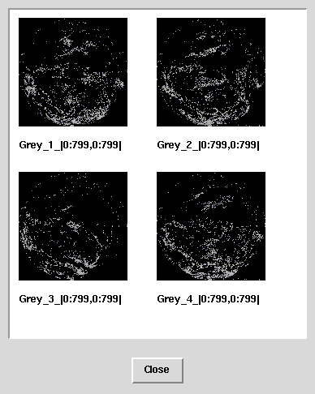

|
| [Prev] | [Up] | [Next] |
SELECT img + 30c FROM earth AS imgYou can also use these operators on cells from different collections. You can mask the earth images with another object from the collection mask by using the query
SELECT img * msk FROM earth AS img, mask AS mskIn this case the cells of mask should only contain the values {0,1}.
Boolean operators can be interpreted as {TRUE, FALSE} or as integer values, depending on the context. Let's have a look at the following query:
SELECT img * ((img > 130c) AND (img < 200c)) FROM earth AS imgThe first line multiplies the image with the result of a boolean expression which returns TRUE (= 1) for pixel values between 131 and 199 and FALSE (= 0) otherwise. Therefore each pixel outside this range will be multiplied by 0 and thus become black whereas each pixel within this range will be multiplied by 1, preserving its original value. The overall effect is that very dark and very bight areas are set to black.
Executing this query on the earth collection of images produces the following result:

| [Prev] | [Up] | [Next] |
03-Mar-1998